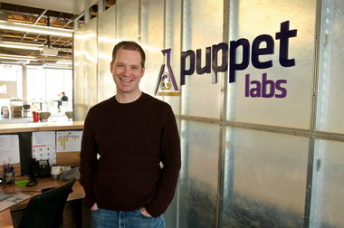

 Luke is the founder and CEO of Puppet Labs, and the original author of Puppet and many related tools. He graduated in Chemistry from Reed College in 1996, started his career as a system administrator, and has been an open source contributor and speaker since 2000. He has presented and published on DevOps, open source, startups, and cloud computing, and is opinionated about technology in general and product design in particular.